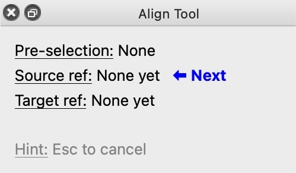
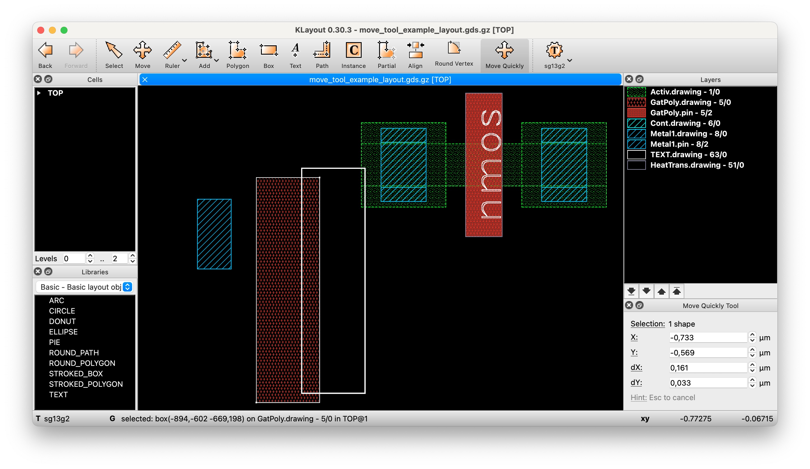

KLayout Productivity Suite Documentation
1 Introduction
1.1 About KLayout Productivity Suite
KLayout is an open source VLSI layout viewer and editor.
The KLayout Productivity Suite is a collection of plugins developed by the Department for Integrated Circuits (ICD), Johannes Kepler University (JKU) to enhance your layout design productivity.
The available plugins are listed in the table below.
| Title | Description | Repository URL |
|---|---|---|
| Align Tool Plugin | Tool to align layout objects | https://github.com/iic-jku/klayout-align-tool |
| Automatic Backups | Create automatic backups of edited layouts | https://github.com/iic-jku/klayout-auto-backup |
| Layer Shortcuts Plugin | Shortcuts to quickly change layer visibility | https://github.com/iic-jku/klayout-layer-shortcuts |
| Library Manager Plugin | Library manager for hierarchical layouts | https://github.com/iic-jku/klayout-library-manager |
| Move Quickly Tool Plugin | Tool to quickly move layout objects | https://github.com/iic-jku/klayout-move-tool |
| Pin Tool Plugin | Efficient placement of pins | https://github.com/iic-jku/klayout-pin-tool |
| Plugin Utilities Library | Utility library used by various IIC KLayout plugins | https://github.com/iic-jku/klayout-plugin-utils |
The KLayout Productivity Suite source code itself is made publicly available on GitHub and shared under the GPL-3.0 license (see links above in table above).
The KLayout Productivity Suite documentation source code is made publicly available on GitHub (follow this link) and shared under the Apache-2.0 license.
Please feel free to create issues and/or submit pull requests on GitHub to fix errors and omissions!
The production of the tool and this document would be impossible without these (and many more) great open-source software products: KLayout, Quarto, Python, ngspice, Numpy, Scipy, Matplotlib, Git, Docker, Ubuntu, Linux…
1.2 Acknowledgements
This project is funded by the JKU/SAL IWS Lab, a collaboration of Johannes Kepler University and Silicon Austria Labs.
1.3 Installation
Generally, the plugins can be installed using the KLayout Package Manager.
KLayoutProductivitySuiteacts as a meta-package that can be installed in KLayout’s Package Manager. Once installed, it automatically pulls in all the plugins asdependenciesthrough thegrain.xml- Alternatively, single plugins can be cherry-picked using the plugin title in the above table (without whitespace)
As for the dependencies, there are multiple options available.
1.3.1 Option 1: Using IIC-OSIC-TOOLS Docker Image
We provide a comprehensive, low entry barrier Docker image that comes pre-installed with most relevant open source ASIC tools, as well as the open PDKs. This is a pre-compiled Docker image which allows to do circuit design on a virtual machine on virtually any type of computing equipment (personal PC, Raspberry Pi, cloud server) on various operating systems (Windows, macOS, Linux).
For further information please look at the Docker Hub page and for detailed instructions at the IIC-OSIC-TOOLS GitHub page.
In this document, we assume that users have a basic knowledge of Linux and how to operate it using the terminal (shell). If you are not yet familiar with Linux (which is basically a must when doing integrated circuit design as many tools are only available on Linux), then please check out a Linux introductory course or tutorial online, there are many resources available.
A summary of important Linux shell commands is provided in IIC-JKU Linux Cheatsheet.
1.3.2 Option 2: Standalone Installation
- KLayout layout tool:
- Skywater sky130A PDK:
- optional
pip3 install --upgrade ciel(install PDK package manager)ciel ls-remote --pdk sky130A(retrieve available PDK releases- for example
PRE-RELEASE 0c1df35fd535299ea1ef74d1e9e15dedaeb34c32 (2024.12.11))
- for example
ciel enable --pdk sky130A 0c1df35fd535299ea1ef74d1e9e15dedaeb34c32(install a PDK version)- PDK files now have been installed under
$HOME/.volare/sky130A
- IHP SG13G2 PDK:
- optional
pip3 install --upgrade ciel(install PDK package manager)ciel ls-remote --pdk ihp-sg13g2(retrieve available PDK releases- for example
PRE-RELEASE cb7daaa8901016cf7c5d272dfa322c41f024931f (2025.07.18))
- for example
ciel enable --pdk ihp-sg13g2 cb7daaa8901016cf7c5d272dfa322c41f024931f(install a PDK version)- PDK files now have been installed under
$HOME/.volare/ihp-sg13g2
2 Align Tool
2.1 Motivation
Boost your layout productivity with quick alignments of layout elements, such as
- cell instances
- shapes (e.g. polygons, boxes, paths)
Choose constraints by selecting features, such as
- edges (the entire edge)
- points (edge end points or the edge middle point)
2.2 Usage

2.2.1 Pre-Selection
You can select instances and shapes (you want to align), prior to invoking the tool, thus making a pre-selection. The selection status will be displayed in the dock setup panel, as seen in Figure 1. If no pre-selection is made, the shape or instance of the source reference point is also the object being aligned.


2.2.2 Selecting Features
Either points or edges can be chosen as the alignment reference.
- Select the midpoint or one of the endpoints of an edge of a shape or instance bounding box. The search box is shown as a dashed rectangle
- points must be within the search box
- edges just intersect the search box
- Left-click to apply the selection
2.2.3 Example 1: point-to-point alignment
- Ensure there is no pre-selection
- Click the Align tool (Figure 2)
- or press
Ato enter the align mode (if you’ve configured the key binding as explained here).
- or press
- Select feature of the shape to be moved/aligned, the source reference (Figure 3)
- Select feature of the other shape that acts as the target reference (Figure 4)
- Left-click to apply the alignment (Figure 5)
- Alternatively, press Esc to cancel the operation


2.2.4 Example 2: edge-to-edge alignment
Notes on aligning edges to edges:
- edges must be parallel
- if the edge is too short and a point is always marked for selection, zoom in
- in edge-to-edge mode, alignment is performed only along the perpendicular axis, so
- for horizontal edges: in the Y direction
- for vertical edges: in the X direction
2.3 Assign key binding A to the tool
To configure a key binding:
- In the main menu, open the Preferences/Settings in KLayout
- Navigate to Application→Customize Menu
- Search for ‘Align’
- Assign the shortcut
Ato the pathedit_menu.mode_menu.Align

3 Move Quickly Tool
Boost your layout productivity with quick moves of layout elements, such as
- cell instances
- shapes (e.g. polygons, boxes, paths)
3.1 Usage

3.1.1 Pre-selection
- You can select instances and shapes (you want to move), before invoking the tool
- The selection will be displayed in the dock setup panel
3.1.2 Tool activation and deactivation
- Click the Move Quickly tool or press
Mto enter the tool mode (if you’ve configured the key binding as explained here - Press
Escat any time to abort the tool and activate the regular KLayout selection tool.
3.1.3 Example 1: Moving single object (mouse)
- Activate the tool
- If there is no selection, left-click an object to move it
- Otherwise, left-click again to move it
- Move the mouse to the destination
- Click to move the object
3.1.4 Example 2: Moving single object (keyboard)
- Activate the tool
- Left-click an object to select it
- Press
Tabto enter the dock setup widget - Provide either absolute positions or relativ deltas
- Press
Enterto commit the move operation
3.1.5 Example 3: Extend selection
To keep the current selection, and extend it with additionally selected objects:
- Activate the tool
- Select an object
- Hold
Shiftand select additional object(s) - Click to start moving
- Move the mouse to the desired destination
- Commit the move operation with a click or by pressing
Enter
3.1.6 Example 4: Drag selection
- Activate the tool
- Select object(s) by dragging the mouse
- Hold
Shiftand select additional object(s) - Click to start moving
- Move the mouse to the desired destination
- Commit the move operation with a click or by pressing
Enter
3.2 Pro-Tip: assign key binding M to the tool
- In the main menu, open the Preferences/Settings in KLayout
- Navigate to Application→Customize Menu
- Search for ‘Move’
- Assign the shortcut
Mto the pathedit_menu.mode_menu.Move_quickly
4 Pin Tool
4.1 Motivation
Boost your layout productivity with quick placement of pins.
4.2 Usage
4.2.1 Placing a pin
The Pin Tool will automatically choose the appropriate layer based on the selection in the layer table.
E.g., if currently TopMetal1.drawing is selected (Figure 8), the layer TopMetal1 will be chosen.
Before placing the pin, configure the desired properties in the dock setup panel (Figure 9):
- Layer: usually pre-filled with the appropriate layer, but can be changed here
- Pin: name of the pin label
- Width / Height: dimensions of the pin

To place a pin:
- Move the mouse to preview the pin placement (Figure 10)
- A dashed box will indicate the bounds of the pin
- A small circle will indicate the placement position
- Left-click to place a pin
- Press
Escto quit the tool
4.2.2 Combined usage with the Layer Shortcuts Plugin
Say you want to place the same pin in multiple layers, there is a nice use case combination with the Layer Shortcuts Plugin:
- activate the Pin Tool and name the pin label
- press key
1to focus on layer groupMetal1 - place a pin in layer
Metal1 - press key
2to focus on layer groupMetal2 - place a pin in layer
Metal2 - press key
3to show all layers
4.3 JSON tech files for supported PDKs
The JSON tech files are currently available for the PDKs:
- IHP SG13G2
- Skywater sky130
5 Layer Shortcuts Plugin
Boost your layout productivity with shortcuts to quickly change layer visibility and selection.
5.1 Usage
5.1.1 Tool activation and deactivation
Activate or deactivate the Layer Shortcuts plugin by selecting Tools→Layer Shortcut Plugin in the main menu.
5.1.2 Shortcuts
Shortcuts can be defined as action steps in the JSON configuration file.
This following table describes the shortcuts of our default IHP SG13G2 configuration.
| Shortcut | Description (What happens) |
|---|---|
0 |
Show default layers |
, |
Hide default layers |
1 |
Focus on 1st metal and related vias |
2 |
Focus on 2nd metal and related vias |
3 |
Focus on 3rd metal and related vias |
4 |
Focus on 4th metal and related vias |
5 |
Focus on 5th metal and related vias |
6 |
Focus on 6th metal and related vias |
7 |
Focus on 7th metal and related vias |
8 |
Focus on Gate Poly and related layers |
9 |
Focus on Diffusion and related layers |
Shift+1 |
Extend the focus to include 1st metal and related vias |
Shift+2 |
Extend the focus to include 2nd metal and related vias |
Shift+3 |
Extend the focus to include 3rd metal and related vias |
Shift+4 |
Extend the focus to include 4th metal and related vias |
Shift+5 |
Extend the focus to include 5th metal and related vias |
Shift+6 |
Extend the focus to include 6th metal and related vias |
Shift+7 |
Extend the focus to include 7th metal and related vias |
Shift+8 |
Extend the focus to include Gate Poly and related vias |
Shift+9 |
Extend the focus to include Diffusion and related vias |
5.2 Supported PDKs
Currently, we support the following PDKs:
IHP SG13G2: https://github.com/iic-jku/klayout-layer-shortcuts/blob/main/pdks/ihp-sg13g2.json- Skywater
sky130: https://github.com/iic-jku/klayout-layer-shortcuts/blob/main/pdks/sky130.json - Global Foundries
gf180mcu: https://github.com/iic-jku/klayout-layer-shortcuts/blob/main/pdks/gf180mcu.json
You can add support for additional PDKs by writing a JSON configuration file:
- copy the existing JSON file and ensure the PDK name is volare/ceil compatible
- Noters about the JSON file format
- NOTE: Layer names must be the same as in the KLayout layer properties XML file (e.g.
~/.volare/ihp-sg13g2/libs.tech/klayout/tech/sg13g2.lyp) - NOTE: The technology name must be the same as in the KLayout technology XML file (e.g.
~/.volare/ihp-sg13g2/libs.tech/klayout/tech/sg13g2.lyt) - NOTE: The layer group names must be unique but are completely custom
- NOTE: Layer names must be the same as in the KLayout layer properties XML file (e.g.
- create a pull request
6 Library Manager
Boost your layout productivity with hierarchical layouts:
- Automatically load cell libraries along with your hierarchical layout
- Manage loaded cell libraries
- Reload updated cells
- Export the final layout for tapeout
6.1 Usage
6.1.1 Basics
- Hierarchical layouts have suffix
*.klay(and are technically OASIS files with special metadata) - A library is just a Layout, with its top cells representing library cells
- Library maps have suffix
*.klib(and are basically JSON files with a special schema), they can contain- Comments
- Library Definition: maps a name to a library path (e.g. a stdcell library)
- Library Map Includes: reference to include another
*.klibfile (e.g. a set of libraries useful for the PDK)
- NOTE: alternatively to this plugin, you could also put them in
~/.klayout/libraries/
6.1.2 Menu Commands
- In the File Menu, there are commands related to the library manager (Figure 11)
- Use File→New Hierarchical Layout… to configure a new hierarchical layout (Figure 12)
- With a Hierarchical Layout open, use File→Manage Cell Library Map… to manage the cell libraries (Figure 13)
- The loaded cell libraries will appear in the Libraries Panel (Figure 14)
- With a Hierarchical Layout open, use File→Save Hierarchical Layout [As]… to save the layout.
- Finally, use File→Export Layout For Tapeout… to export the final layout version for tapeout.

7 Automatic Backups
This plugin automatically creates backups
- Save your precious layout work in case of crashes or power outages
- Configure intervals and rotation scheme
7.1 Usage
7.1.1 Tool activation and deactivation
Activate or deactivate the Auto Backup plugin by selecting File→Automatic Backups→Enable Automatic Backups in the main menu.

Configure backup settings by clicking File→Automatic Backups→Setup Automatic Backups in the main menu.